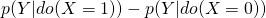
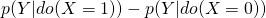

Causal Inference
Misc
- Notes from
- Statistical models measure associations (e.g. linear, non-linear) which is mutual information among the variables
- e.g. wind and leaves moving in a tree (doesnt answer whether the leaves moving creates the wind or the wind creates leaving moving)
- Causal inference predicts the conseqences after an intervention (i.e. action)
- You must know the direction of causation in order to predict the conseqences of an intervention (unlike measuring associations)
- Answers the question, What happens if I do this?
- Causal inference is able to reconstruct unobserved counterfactual outcomes.
- Answers the question, What happens if I had done something else?
- Causal assumptions are necessary in order to make causal inferences
- multiple regression does not distinguish causes from confounds
- p-values are not causal statements
- Designed to control type I error rate
- AIC, etc are purely predictive
- Causal Experiment Assumptions
- see tlverse workshop notes and ebook for listing of assumptions and definitions, https://tlverse.org/acic2019-workshop/intro.html#identifiability
- The tlverse Project seeks to use ML models to calculate causal effects. Uses Super Learner ensembling and Targeted Maximum Likelihood Estimation (TMLE) which they call Targeted Learning.
- Ignorability - By randomly assigning treatment, researchers can ensure that the potential outcomes are independent of treatment assignment, so that the average difference in outcomes between the two groups can only be attributable to treatment
- see tlverse workshop notes and ebook for listing of assumptions and definitions, https://tlverse.org/acic2019-workshop/intro.html#identifiability
- Engineering outcome variables using potential adjustment variables does not automatically adjust for those variables in your model
- Notes from There Are No Magic Outcome Variables
- Example
- P is population density
- X is the variable of interest
- GDP and P have been used to create GDP/P
- P influences X and provides a backdoor path to GDP/P, so P must be adjusted for
- Even if P doesnt influence X, the point is that constructing GDP/P using P doenst automatically adjust for P
- Randomized experiments remove all paths from the treatment variable, X
.png)
- Adjusting for Z, B, and C can add precision to measurement of the treatment effect since they are causal to Y, but they arent necessary to get an unbiased estimate of the treatment effect.
- Table 2 fallacy (Notes from McElreath video, 2022 SR Lecture 6)
- The 2nd table presented in a paper is usually a summary of all the effects of a regression. The fallacy is that the coefficient of each variable is treated as causal.
- Example: The effect of HIV on Stroke
- The model is lm(Stroke ~ HIV + Smoke + Age)
- Only the coefficient of the HIV variable should be treated as causal and none of the other adjustment variables (Smoke, Age)
- The effects for Smoke and Age are only partial.
- There are likely unobserved confounding variables, U, on the effect of Smoking on Stroke (e.g. other lifestyle variables).
- Smoke is confounded so its causal estimate is biased
- Age is also confounded since Smoke is now a collider and has been conditioned upon. This opens the non-causal path, Age-Smoke-U-Stroke.
- Age-Smoke is frontdoor, but the backdoor path, Smoke-U, also becomes a backdoor path for Age once Smoke is conditioned upon. (aka sub-backdoor path)
- So any open path that contains a backdoor path must also be closed
- The model is lm(Stroke ~ HIV + Smoke + Age)
- Solutions
- Dont include effect estimates of adjustment variables
- Explicitly interpret each effect estimate according to the causal model
- See 2022 SR at the end of Lecture 6 where McElreath breaks down the interpretation of each adjustment variable estimated effect.
- Partial Identification (Handling Unobserved Confounds)
- Misc
- Also see
- Paper: Hidden yet quantifiable: A lower bound for confounding strength using randomized trials (code)
- Using RCT results and Observational data, this paper proposes a statistical test and a method for determining the lower bound confounder strength.
- In the context of pharmacuticals, RCT results are evidently often released after FDA approval, but this method can be used in any field where theres a combination of RCT and observational studies..
- Paper: Hidden yet quantifiable: A lower bound for confounding strength using randomized trials (code)
- Also see
- Sometimes the confounding paths of a DAG model can be not be resolved.
- For confounders that influence the treatment and outcome, see:
- Structural Causal Models >> Bayesian examples
- If theres a mediator, see Other Articles >> Frontdoor Adjustment
- Measure proxies for the unobserved confound if its not practical/ethical to measure
- i.e. If the confound is ability, then test scores, letters of recommendation, etc. could be proxies.
- Example: 2022 SR Lecture 10 video, code
.png)
- A: Admitted to Grad School, G: Gender, D: Dept, u: Ability, T1,2,3: 3 Test Scores
- Ability is latent variable/unobserved confounder
- Test Scores are proxies for Ability
- Both models are fit simultaneously
- Couldnt find a way to use {brms} to code this and Kurz didnt included it in his brms SR book.
- A: Admitted to Grad School, G: Gender, D: Dept, u: Ability, T1,2,3: 3 Test Scores
- Example: 2022 SR Lecture 10 video, code
- i.e. If the confound is ability, then test scores, letters of recommendation, etc. could be proxies.
- A biased estimate is better than no estimate. It can provide an upper bound
- Find a natural experiment or design one
- Sensitivity Analysis
- After the analyis, you should be able to make the statement, In order for the confound to be responsible for the entire causal effect, it was have to be
.
- After the analyis, you should be able to make the statement, In order for the confound to be responsible for the entire causal effect, it was have to be
- For confounders that influence the treatment and outcome, see:
- Packages
- {tipr} - Tools for tipping point sensitivity analyses
- {konfound} (vignette): Utilizes a sensitivity analysis approach that extends from dichotomous outcomes and omitted variable sensitivity of previous approaches to continuous outcomes and evaluates both changes in estimates and standard errors.
- ITCV (Impact Threshold of a Confounding Variable) - Generates statements about the correlation of an omitted, confounding variable with both a predictor of interest and the outcome. The ITCV index can be calculated for any linear model.
- RIR (Robustness of an Inference to Replacement) - Assesses how replacing a certain percentage of cases with counterfactuals of zero treatment effect could nullify an inference. The RIR index is more general than the ITCV index.
- Steps for using sensitivity analysis
- Perform a sensitivity analysis to determine plausibly how much of the causal effect is due to confounding paths
- Assume the confound exists, model its consequences for different strengths/kinds of influence
- Example: 2022 SR Lecture 10 video, code
.png)
- A: Admitted to Grad School, G: Gender, D: Dept, u: Unobserved Confounder
- Both models are fit simultaneously
- Values for and are specified and u is estimated as a parameter
- I think Gender (G) is an interaction in both models which I didnt think was possible given there are no arrows of influence from gender to u.
- Since gender is a moderator it wouldnt necessarily have to be an influence arrow, it would only need to be an arrow from G to the effect of u on D (see Moderator Analysis), so maybe this is kosher
- Could also be that Im misunderstanding McElreaths code he uses to specify his models with {Rethinking}.
- Couldnt find a way to use {brms} to code this and Kurz didnt included it in his brms SR book.
- Use previous studies that have effect strengths of those potential confounding variables
- Compare the strengths from the previous studies to the strength determined from the sensitivity analysis. The difference is a good guess for the strength of the causal effect of your treatment variable.
- Perform a sensitivity analysis to determine plausibly how much of the causal effect is due to confounding paths
- Misc
{kind=link}
{kind=link}
Causal Design
- Notes from McElreath video
- Misc
- When trying to determine the relationship (e.g. linear, nonlinear) between variables and remove inconsequential variables, the Double Debiased ML procedure might be useful.
- Double Debiased Machine Learning - basic concepts, links to papers, videos
- EconML (Microsoft) and causalml (Uber) has included the method in their libraries
- When trying to determine the relationship (e.g. linear, nonlinear) between variables and remove inconsequential variables, the Double Debiased ML procedure might be useful.
- When trying to infer causal relationships, we should not blindly enter all variables into a regression in order to control for them, but think carefully about what the underlying causal DAG could look like. Otherwise, we might induce spurious associations (e.g. confounding such as collider bias).
- Overview
- Make a causal model (i.e. DAG)
- Need background information in order to make the causal assumptions represented in the DAG
- DAGs only show whether or not a variable influences another, not how the influence occurs (e.g. DAGs cant show interactions between variables or whether the association is non-linear)
- Use it to design data collection and statistical procedures
- Make a causal model (i.e. DAG)
- Steps:
- Determine two variables of interest (exposure, outcome) that you want to determine if a causal relationship exists and what effect the exposure has.
- Use domain knowledge or prior scholarship to determine the relevant variable and the likely associations between all variables in data
- Create the DAG
- Identify the direct causal path between exposure and outcome
- Identify other explanatory variables and label their directions of influence with each other, the exposure, and the outcome variable
- Consider which variables (especially the exposure and the outcome) have unobserved variables influencing them.
- Analyze the DAG
- Identify colliders and use d-separation to determine conditional independencies
- Identify additional paths (backdoor paths, sub-backdoor paths) between exposure and outcome
- Use the backdoor criterion to determine the set of variables that need to be adjusted for in order to block all backdoor paths with only the direct causal path remaining open.
- Add additional adjustment variables that are causal to the outcome variable (but dont confound the treatment effect) in order to add precision to the estimate of the treatment effect
- Create simulated data that fits the DAG (i.e. a generative model)
- Perform statistical analysis (i.e. SCMs) on the simulated data to make sure you can measure the causal effect.
- Design experiment and collect the data
- Run the statistical analysis on the collected data and calculate the average causal effect (ACE) under the assumptions that your DAG and model specifications are correct.
- Based on your results, revise the DAG and SCM as necessary and repeat as necessary
- Bad Adjustment Variables (Code and more details included in 2022 SR, Lecture 6)
- For all examples, Z is the adjustment variable thats being considered; X is the treatment and Y is the outcome
- In each scenario, including Z produces a biased estimate of X, so the correct model is Y ~ X.
- M-bias
- Z doesnt have a direct causal influence on the either X or Y, but when its conditioned upon it becomes a collider due to unobserved confounds that have a direct causal influence on X and Y.
- Common issue in Political Science and network analysis
- Example
- Y: Health of Person 2
- X: Health of Person 1
- Z: Friendship status
- Pre-treatment variable (tend to be open to collider paths) since they could be friends before the exposure
- U: Hobbies of Person 1
- V: Hobbies of Person 2
- Post-Treatment Bias
- Z is a mediator and conditioning upon Z blocks the path from X to Y, but opens the backdoor path through the unobserved confound, U.
- Common in medical studies
- Example
- Y: Lifespan
- X: Win Lottery
- Z: Happiness
- U: Contextual Confounds
- Selection Bias
- Same as collider bias
- This version adds an unobserved confounder
- Example
- Y: Income
- X: Education
- Z: Values
- U: Family
- Same as collider bias
- Case-Control Bias
- Z is a descendent. Since Z has information about Y, conditioning on it will narrow the variation of Y and distort the measured effect of X.
- Also see Association >> Single Path DAGs >> Descendent
- Example
- Y: Occupation
- X: Education
- Z: Income
- Precision Parasite
- 2 versions: with and without U
- Without U, conditioning on Z removes variation from X and lessens (but doesnt bias) the precision of the estimated effect of X on Y (i.e. inflated std.error)
- With U, the effect of X is biased and that bias is amplified when Z is included.
- 2 versions: with and without U
- Peer Bias
- Classic DAG of the Berkley Admission-Race-Department study
- Also see Structural Causal Models >> Example (Bayesian Peer Bias)
- X is race, E is department, Q is unobserved (e.g. student quality), Y is Admission
- Department cannot be conditioned upon because its a collider with Q and would bias the estimate of X through a sub-backdoor path, X-E-Q-Y
- Only the total effect of X on Y can be estimated (Y ~ X) since E cannot be conditioned upon but thats not interesting and maybe not precise
- For all examples, Z is the adjustment variable thats being considered; X is the treatment and Y is the outcome
{kind=link}
{kind=link}
{kind=link}
{kind=link}
{kind=link}
{kind=link}
Terms
- Average Causal Efffect (ACE) - average population effect thats calculated from an intervention (see Counterfactual definition for info on Individual Causal Effects)
- If X is binary, then  is the average causal effect (see Simpsons Paradox example)
- Calculated from a contingency table
- Also,
- This looks like the interpretation of the slope in a regression model.
- If X is binary, then  is the average causal effect (see Simpsons Paradox example)
- Backdoor Criterion - A valid causal estimate is available if it is possible to condition on variables such that all backdoor paths are closed
- Given two nodes, X and Y, an adjustment set, L, fulfills the backdoor criterion if
- no member in L is a descendant of X and
- members in L block all backdoor paths (shutting the backdoor) between X and Y.
- Adjusting for L thus yields the causal effect of XY.
- After executing an intervention, the conditional distribution in the observational DAG (seeing) will correspond to the interventional distribution (doing) when blocking the spurious path. (see Simpsons Paradox example)
- Given two nodes, X and Y, an adjustment set, L, fulfills the backdoor criterion if
- Backdoor Path - A non-causal path that enters a causal variable in a DAG rather than exits it.
- e.g. the path that connects a collider to a causal variable points from the collider to the causal variable
- Sub-backdoor Path - this path begins with a frontdoor path but through conditioning on a variable, it opens a connecting backdoor path which biases the treatment effect
- see Misc >> Table 1 Fallacy and Causal Design >> Bad Adjustment Variables >> Peer Bias
- The causal effect is the distribution of Y when we change x, averaged over the distributions of the adjustment variables (Z)
- Causal Hierarchy (lowest to highest)
- Association
- associated action: Seeing - observational; observing the value of Y when X = x
- , observational distribution; What values Y would likely take on if X happened to equal x.
- associated action: Seeing - observational; observing the value of Y when X = x
- Intervention
- associated action (do-Calculus): Doing - experimental; observing the value of Y after setting X = x
- , interventional distribution; What values Y would likely take on if X would be set to x.
- Using the do operator allows us to make inferences about the population but not individuals.
- do(X) means to cut all of the backdoor paths into X, as if we did a manipulative experiment. The do-operator changes the graph, closing the backdoors.
- The do-operator defines a causal relationship, because Pr(Y|do(X)) tells us the expected result of manipulating X on Y, given a causal graph.
- We might say that some variable X is a cause of Y when Pr(Y|do(X)) > Pr(Y|do(not-X)).
- (makes more sense to me with a binary outcome, Pr(Y = 1|do(X), but maybe Y as a continuous variable can be defined a subset. I dunno)
- We might say that some variable X is a cause of Y when Pr(Y|do(X)) > Pr(Y|do(not-X)).
- The ordinary conditional probability comparison, Pr(Y|X) > Pr(Y|not-X), is not the same. It does not close the backdoor.
- Note that what the do-operator gives you is not just the direct causal effect. It is the total causal effect through all forward paths.
- To get a direct causal effect, you might have to close more backdoors.
- The do-operator can also be used to derive causal inference strategies even when some backdoors cannot be closed.
- associated action (do-Calculus): Doing - experimental; observing the value of Y after setting X = x
- Counterfactual
- associated action: Imagining - what would be the outcome if the alternative wouldve happened.
- Individual Causal Effects can be calculated but it requires stronger assumptions and deeper understanding of the causal mechanisms
- Need to research this part further.
- If the underlying SCM is linear then the ICE = ACE.
- Association
- A collider along a path blocks that path. However, conditioning on a collider (or any of its descendants) unblocks that path
- When a collider is conditioned upon, the change in the association between the two nodes it separates is called collider bias.
- e.g. if Z is a collider between X and Y, conditioning upon Z will induce an association between X and Y.
- When a collider is conditioned upon, the change in the association between the two nodes it separates is called collider bias.
- A conditioning set, \(L\), is the set of nodes we condition on (it can be empty).
- Confounding is the situation where a (possibly unobserved) common cause obscures the causal relationship between two or more variables.
- There is more than one causal path between two nodes.
- A causal effect of X on Y is confounded if
- Collider bias is a type of confounding. When a collider is controlled for, a second (or more) path opens, and the effect is confounded
- X and Y are d-separated by [L if conditioning on all members in [L blocks all paths between the nodes, X and Y.
- Tool for checking the conditional independencies which are visualized in DAGs.
- A descendant is a node connected to a parent node by that parent nodes outgoing arrow.
- Frontdoor Adjustment - In a causal chain with three nodes XZY, we can estimate the effect of X on Y indirectly by combining two distinct quantities: (Useful for when unobserved confounders prevent direct causal estimation)
- The estimate of the effect of X on Z, P(Z|do(X))
- The estimate of the effect of Z on Y, P(Y|do(Z), X)
- Frontdoor Path - a path that exits a causal variable in a DAG rather than enters it.
- e.g. the path that connects a causal variable, X, to an outcome variable, Y, has an arrow that points from X to Y.
- Markov Equivalence - A set of DAGs, each with the same conditional independencies
- Mediation Analysis - seeks to identify and explain the mechanism or process that underlies an observed relationship between an independent variable and a dependent variable via the inclusion of a third hypothetical variable, known as a mediator variable (z-variable in the DAGs of pipes below)
- Including a mediator and the independent variable in a regression will result in the independent variable not being signficant and the mediator being significant.
- Moderation Analysis - Like mediation analysis, it allows you to test for the influence of a third variable, Z, on the relationship between variables X and Y, but rather than testing a causal link between these other variables, moderation tests for when or under what conditions an effect occurs.
- A node is a parent of another node if it has an outgoing arrow to that node
- A path from X to Y is a sequence of nodes and edges such that the start and end nodes are X and Y, respectively.
- Residual Confounding occurs when a confounding variable is measured imperfectly or with some error and the adjustment using this imperfect measure does not completely remove the effect of the confounding variable.
- Example: Women who smoke during pregnancy have a decreased risk of having a Down syndrome birth.
- This is puzzling, as smoking is not often thought of as a good thing to do. Should we ask women to start smoking during pregnancy?
- It turns out that there is a relationship between age and smoking during pregnancy, with younger women being more likely to indulge in this bad habit. Younger women are also less likely to give birth to a child with Down syndrome. When you adjust the model relating smoking and Down syndrome for the important covariate of age, then the effect of smoking disappears. But when you make the adjustment using a binary variable (age<35 years, age >=35 years), the protective effect of smoking appears to remain.
- Example: Women who smoke during pregnancy have a decreased risk of having a Down syndrome birth.
- Structural Causal Models (SCMs) - relate causal and probabilistic statements; each equation is a causal statement
-
- := is the assignment operator
- X is a direct cause of Y which it influences through the function f( )
- where f is a statistical model
- The noise variables, X and Y, are assumed to be independent.
- There are Stochastic and Deterministic SCMs. Deterministic SCMs presented in article.
-
{kind=link}
Association
{kind=link}
{kind=link}
- Far left: lm(Y ~ X); X and Y show a linear correlation when Z is NOT conditioned upon
- Left: lm(Y ~ X + Z); X and Y show NO linear correlation when Z is conditioned upon
- Right: lm(Y ~ X); X and Y show NO linear correlation when Z is NOT conditioned upon
- Far Right: lm(Y ~ X + Z); X and Y show a linear correlation when Z is conditioned upon
Single path DAGs
{kind=link}
- For each of these DAGs, Z would be the only member of the conditioning set.
- The first 3 DAGs represent the scatter plots above
- Z only blocks the path between X and Y when its conditioned upon.
- X and Y are associated (e.g. linear correlation, mutual information, etc.) when Z is ignored
- Conditioning on Z results in X and Y no longer being associated (i.e. conditional independence)
- The first and second DAGs are elemental confounds or relations called Pipes.
- The left one
- In general, DO NOT add these variables to your model
- These paths are causal so they shouldnt be blocked
- If your goal isnt causal inference, then adding these variables might provide predictive information
- e.g. If there was a causal arrow from X to Y, the far left DAG would NOT have a backdoor path and therefore Z would not be conditioned upon to block the path, X-Z-Y
- The path from X to Z is a frontdoor path since the arrow exits X.
- Sometimes you DO condition on these variables
- During mediation analysis, you condition on these variables as part of the process to determine how much of the effect goes through Z.
- The mediation path can have an important interpretation depending on your research question
- e.g. indirect descrimination
- See Statistical Rethinking >> Chapter 11 >> Conclusion of Berkeley Admissions example
- also Lecture 9 2022 video
- See Statistical Rethinking >> Chapter 11 >> Conclusion of Berkeley Admissions example
- e.g. indirect descrimination
- In general, DO NOT add these variables to your model
- The right one is a backdoor path and should be conditioned on.
- Everything you can learn about Y from X (or vice versa) happens through Z, therefore learning about X separately provides no additional information
- Z is traditionally labelled a mediator
- The left one
- The third DAG is an elemental confound or relation called a Fork.
- In general, add these variables to your model
- These are backdoor paths and are NOT causal
- X and Y have a common cause in Z and some of the mutual information about Z they each contain, overlaps, and creates an association (when Z isnt conditioned upon).
- Z only blocks the path between X and Y when its conditioned upon.
- The fourth DAG is an elemental confound or relation called a Collider.
.png)
- In general, do NOT add these variables to your model
- Z blocks the path between X and Y unless conditioned upon.
- An association between X and Y is induced by conditioning on Z, lm(Y ~ X + Z)
- X and Y are independent causes of Z. Z contains information about both X and Y, but X doesnt contain any information about Y and vice versa.
- A small X and a sufficiently large Y (and vice versa) can produce a Z = 1. So X and Y have compensatory relationship in causing Z.
- i.e. For a given value of Z, learning something about X tells us what Y might have been.
- The last elemental confound or relation is called a Descendent.
.png)
- Conditioning on a descendent variable, D, is like conditioning on the variable, Z itself, but weaker. A descendent is a variable influenced by another variable.
- Controlling for D will also control, to a lesser extent, for Z. The reason is that D has some information about Z. This will (partially) open the path from X to Y, because Z is a collider. The same holds for non-colliders. If you condition on a descendent of Z in the pipe, itll still be like (weakly) closing the pipe.
Dual path DAGs
{kind=link}
- Causal paths do not flow against arrows but associations can.
- Two examples of DAGs representing confounding
- These are the 2 middle DAGs above with an additional path from X to Y
- If Z is NOT conditioned on (i.e. top path is not blocked), then the causal effect of X on Y would be confounded.
{kind=link}
- The paths from X to Y:
- The path through Z matches the first DAG.
- Therefore X and Y are conditionally independent given Z.
- The path through W matches the fourth DAG
- Therefore X and Y are conditionally dependent given W.
- The path through Z matches the first DAG.
- The path through W (collider) is blocked unless W is conditioned upon
- The path through Z is open unless Z is conditioned upon
- If Z and W are conditioned upon, then the path between X and Y is open through W and an association is present.
Intervention

- Since actual interventions are usually unfeasible, we want to be able to determine causality with observational data. This requires two assumptions:
- The intervention occurs locally. Which means that only the variable we target is the one that receives the intervention.
- The mechanism by which variables interact do not change through interventions; that is, the mechanism by which a cause brings about its effects does not change whether this occurs naturally or by intervention
- The Doing row of DAGs (aka manipulated DAGs) represents setting X = x
- For DAGs 1 and 4, Y is still affected
- Moving from seeing to doing didnt change anything
- Moving from seeing to doing didnt change anything
- For DAGs 2 and 3, Y is now UNaffected
- For DAGs 1 and 4, Y is still affected
- The rule: After an intervention, incoming arrows are cut from the node where the intervention took place.
Confounding
- The backdoor criterion tells us which variable we need to adjust for in order to for our model to yield a causal relationship between two variables (i.e. graphically, nodes)
- Blocks all spurious, that is, non-causal paths between X and Y.
- Leaves all directed paths from X to Y unblocked
- Creates no spurious paths
- Example
- Causal effect of Z on U is confounded by X because in addition to the legitimate causal path ZYWU, there is also an unblocked path ZXWU which confounds the causal effect
- Since Xs arrow enters the causal variable of interest, Z, its arrow is a backdoor path and needs to be blocked/closed
- There are some descendant nodes that make the confounding a little difficult to parse out, but this graph is essentially
- which is the same as the second example DAG for confounding in the Association section
- The backdoor criterion would have us condition on X, which blocks the spurious path and renders the causal effect of Z on U unconfounded.
- The reduced, confounding DAG above is the same as the third DAG (without the path from Z to U) in the Association section. Conditioning on Z in that example blocked the path between X and Y, so it makes sense that conditioning on X in the reduced DAG would block the Z to X to U path. And therefore, the ZXWU would also be blocked in the complete DAG.
- Note that conditioning on W would also block this spurious path; however, it would also block the causal path, ZYWU.
If we breakdown the complete DAG into the modular components involving W, we can see these are the same as the first example DAG in the Association section.
W is also collider for X and Y, but I dont think that has any bearing when discussing the causal effect of Z on U.
- Causal effect of Z on U is confounded by X because in addition to the legitimate causal path ZYWU, there is also an unblocked path ZXWU which confounds the causal effect
Application: Simpsons Paradox Example
Sex as the adjustment variable
- Patients CHOOSE whether or not to take a drug to cure some disease.
- Men choosing to take the drug recover at a higher percentage that those that didnt
- Women choosing to take the drug recover at a higher percentage that those that didnt
- But overall, those that chose to take the drug recovered at a lower percentage than those that didnt.
- So should a doctor prescribe the drug or not?
- Suppose we know that women are more likely to take the drug, that being a woman has an effect on recovery more generally, and that the drug has an effect on recovery.
- Create DAGs
- S=1 as being female,
- D=1 as having chosen to take the drug
- R=1 as having recovered
- The right DAG indicates either forcing everyone to either take the drug or not take the drug
- Notice that therefore our calculated effect will be confounded.
- Backdoor criterion says the manipulated DAG (right) will correspond to the observational DAG (left) if we condition on Sex.
Blood Pressure as the adjustment variable
- Blood Pressure instead of sex is used as the adjustment. Blood Pressure is a post-treatment variable.
- Relatively same observations as before. High or Low Blood Pressure with the drug produces better results than those that chose not to take the drug. Yet overall, those that chose the drug recovered at a lower percentage.
- Since Blood Pressure (B) is post-treatment, it has no effect on whether the patient takes the drug or not (D).
- Taking or not taking the drug (D) has an indirect effect on recovery (R) through Blood Pressure (B) along with a direct effect. so our calculated effect will be unconfounded.
- So with BP as the adjustment variable, the drug now has a small, negative effect (harmful), 0.78 - 0.83 = -0.05
The unconfounded, average causal effect for the population is negative, therefore the doctor should NOT prescribe the drug.
{kind=link}
{kind=link}
{kind=link}
{kind=link}
{kind=link}
Structural Causal Models (SCMs)
- You add additional assumptions to your DAG to derive a causal estimator
- Full Luxury Bayesian approach
- Full Luxury is just a term coined by McElreath; its just a bayesian model but bayesian models can fully model a DAG where standard regression approachs can fail (see examples)
- No other approach will find something that the bayesian approach doesnt
- Main disadvantage is that it can be computationally intensive (same with all baysian models)
- Provides ways to add causes for missingness and measurement error
- Example (2 Moms)
- Notes from McElreath video
- Hypothesis: a mothers family size is causal to her daughters family size
- Truth: no relationship
- Variables:
- M - Mothers family size (i.e. number of children the birth)
- D - Daughters family size
- B1 - Mothers birth order; binary, first born or not
- B2 - Daughters birth order; binary, first born or not
- U - unobserved confounds (shown as curved dotted line)
-
- Unobserved confounds (economic status, education, cultural background, etc.) are causal to both Mother and Daughter (curved dotted line) which makes regression, D ~ M, impossible
- See Baysian Two Moms example below for results of a typical regression
- Still possible to calculate the effect of M on D with SCMs
- Unobserved confounds (economic status, education, cultural background, etc.) are causal to both Mother and Daughter (curved dotted line) which makes regression, D ~ M, impossible
- Assumptions: Relationships are linear (i.e. linear system)
- Causal Effects
.png)
- We want m which is the causal effect of M on D
- Assumes causal effect of birth order is the same on mother and daughter
- Aside: There is no arrow/coefficient from M to B2 because its not germane to the calculation of m
- Calculate linear effect (i.e. regression coefficient) without a regression model using a linear system of equations
- Note: a regression coefficent, = cov(X,Y) / var(X)
- We cant calculate the covariance of M and D directly because it depends on unobserved confounders but we can calculate the covariance between B1 and D and use that to get m.
- The covariance for each path is the product of the path coefficients and the variance of the originating causal variable.
- Path B1 M: cov(B1, M) = b*var(B1)
- Path B1 D: cov(B1, D) = b*m*var(B1)
- 2 equations and 2 unknowns, m and b
- Solve for b in the first equation, substitute b into the second equation, and solve for m
- m = cov(B1, D) / cov(B1, M)
- Still need an uncertainty of this value (e.g. bootstrap)
- Example (Bayesian 2 Moms)
- See previous example for link, hypothesis, and definition of the variables
.png)
- Functions (right side)
- Each variables functions inputs are variables that are causal influences (i.e. have arrows pointing at the particular variable
- e.g. M has two arrows pointing at it in the DAG: B1 and u
- Each variables functions inputs are variables that are causal influences (i.e. have arrows pointing at the particular variable
- Code
- The assumption is that this is a lineary system, so M and D have Normal distributions for their functions with means as linear regression equations
- B1 and B2 are binary so they get bernoulli distributions
- U gets a standard normal prior
- Aside: evidently this is a typical prior for latent variables in psychology
- p, intercepts, sd, k get typical priors for bayesian regressions
- Results
.png)
- Truth: no effect
- 1st 3 lm models shows how the unobserved confound biases the estimate when using a typical regression model to estimate the causal effect
- Including B2 adds precision to the biased estimate since it is causal to the outcome D while adding B1 increases the bias
- Bayesian model isnt fooled because U is specified as an input to the functions for M and D
- Interpretation: There is no reliable estimate of an effect. The most likely effect is a moderately positive one but it could also be negative.
- Adding more simulated data to this example will move the point estimate towards zero
- See previous example for link, hypothesis, and definition of the variables
- Example (Bayesian Peer Bias)
- Also see Causal Design >> Bad Adjustment Variables >> Peer Bias
- Hypothesis: racial discrimination in acceptance of applicatioon to Berkeley grad schools
- Truth: moderate negative effect, -0.8
- Variables:
- X is race, E is department, Q is an unobserved confound (latent variable: student quality), Y is binary; Admission/No Admission
- R1 and R2 are proxy variables for Q (e.g. test scores, lab work, extracurriculars, etc.)
- Assumptions: System is linear
- DAG and Code
.png)
- XX is the race variable with X as the coefficient in the code
- This code uses his {rethinking} package so some of this syntax is unfamiliar
- R1 and R2 are shown in the DAG to be influenced by student quality, Q
- Every prior is normal except for Qs coefficient
- XX is the race variable with X as the coefficient in the code
- Results
.png)
- Truth: -0.8
- 1st 3 glm models shows how the unobserved confound, Q, biases the estimate when using a typical logistic regression model to estimate the causal effect
- Bayesian model isnt fooled because Q is specified as an input to the function for Y
- Interpretation: There is a reliably negative effect (no 0 in the CI). The most likely effect is a moderately negative one.
- Not quite equal to the truth but reliably negative and the point estimate is closer than the glms
- Example
- Assumptions: Relationships between variables are linear and error terms are independent
- Equations
, -
- DAG 1 (left) shows the association DAG which represents the SCM
- manipulated DAG 1 (middle) shows intervention where z is set to a constant
- incoming causal arrows get cutoff the intervening variable
- manipulated DAG 1 (right) shows intervention where x is set to a constant
- Simulation of the SCM (n = 1000) (code in article)
- Z is more predictive of Y than X
- Simulate interventions (code in article)
- Left - histogram of SCM for Y without an intervention
- Middle - Intervention on Z
- confirms the DAG which shows no effect on Y and Z is not causal
- Right - intervention on X
- confirms the DAG which shows an intervention on X produces an effect on Y and X is causal
- Average Causal Effect (ACE) can be determined by subtracting the expected values of interventions where X = x +1 and X = x
{kind=link}
{kind=link}
{kind=link}
Counterfactuals
- Example(code in article): Test whether Grandmas home remedy can speed recovery time for the common cold
- SCM
- T is 1/0, i.e. whether patient receives Grandmas treatment, with p = 0.5;
- R is recovery time
- is the intercept
- is the average causal effect, since

- where
- From fitting the model, we find = 7, = -2, = 0, 1 = 0.78
- In this case, the SCM is linear, so the ICE = ACE.
- SCM
{kind=link}
Mediation Analysis
.png)
Figure
- c is the direct effect of X on the outcome after the indirect path has been removed (i.e. conditioned upon, outcome ~ X + mediator)
- c is the to total effect (outcome ~ X)
- c - c equals the indirect effect
- See definitions below
Allows you to test for the influence of a third variable, the mediator, on the relationship between (i.e. effect of) the treatment variable, X, and the Outcome variable, Y.
Misc
- Notes from: Mediation Models
- Overview of packages (Aug 2020)
.png)
- {brms} very flexible in terms of models. Youll just have to calculate the effects by hand unless some outside package (e.g. sjstats) takes a brms model and does it for you.
- See below for formulas. {mediation} papers should have other formulas for other types of models (e.g. poisson, binomial)
- {mediation} handles a lot for you. Method isnt bayesian but is very similar to it in a frequentist-bootstrappy-simulation way.
- Package has been substantially updated since that article was written.
- Overview of packages (Aug 2020)
- Also see
- Other Articles >> Frontdoor Adjustment
- Statistical Rethinking >> Chapter 11 >> Conclusion of Berkeley Admissions example
- also Lecture 9 2022 video
- ebook (w/brms) Introduction to Mediation, Moderation, and Conditional Process Analysis
- Packages
- {lcmmtp} - Efficient and flexible causal mediation with longitudinal mediators, treatments, and confounders using modified treatment policies
- Including a mediator and the independent variable in a regression will result in the independent variable not being signficant and the mediator being significant.
- Example: Causal effect of education on income
- Say occupation is your mediator. Education has a big impact on your occupation, which in turn has a big impact on your income. You dont want to control for a mediator if you are interested in the full effect of X on Y! Because a huge part of how X impacts on Y is precisely through the mediation of C, in our case choice of and access to occupation, given a certain level of education. If you control for occupation you will be greatly underestimating the importance of education.
- Example: Causal effect of education on income
- When would you want to only measure the Direct Effect?
- Example: Determining the amount of remuneration for discrimination
- From Simulating confounders, colliders and mediators
- Variables
- Outcome: Pay Gap
- Treatment: Gender
- In this case, this variable is actually gender discrimination in the current workplace in making a pay decision (for which we use actual, observed Gender as a proxy)
- Mediators: Occupation and Experience
- When determining whether a type of descrimination exists, you dont want to condtion on the mediators, because the effect of gender will be underestimated. So, youd want the total effect. But here, discrimation is already determined and Gender is now a proxy variable. Under Genders new definition, Occupation and Experience might influence the amount of gender discrimiation, so they cant be definitively labelled mediators any more.
- So if you want to estimate that final equal pay for equal work step of the chain then yes it is legitimate to control for occupation and experience.
- Example: Determining the amount of remuneration for discrimination
- Should always compare a mediation model to a model without mediation
- An unnecessary mediation model will almost certainly be weaker and probably more confusing than the model you would otherwise have.
- Average Causal Mediation Effect (ACME) (aka Indirect Effect)- the expected difference in the potential outcome when the mediator took the value that it would have under the treatment condition as opposed to the control condition, while the treatment status itself is held constant.
- If this isnt significant, there isnt a mediation effect
- It is possible that the ACME takes different values depending on the baseline treatment status. Shown by analyzing the interaction between the treatment variable and the mediator
- (t) = E[Y (t, M(t1)) Y (t, M(t0))]
- where
- t, t1, t0 are particular values of the treatment T such that t1 t0,
- M(t) is the potential mediator
- Y (t, m) is the potential outcome variable
- where
- Average Direct Effect (ADE) - the expected difference in the potential outcome when the treatment is changed but the mediator is held constant at the value that it would have if the treatment equals t.
- (t) = E[Y (t1, M(t)) Y (t0, M(t))]
- The Total Effect of the treatment on the outcome is ACME + ADE.
- Notes from: Mediation Models
Conditions where you likely do NOT need mediation analysis :
- If you cannot think of your model in temporal or physical terms, such that X necessarily leads to the mediator, which then necessarily leads to the outcome.
- If you could see the arrows going either direction.
- If when describing your model, everyone thinks youre talking about an interaction (a.k.a. moderation).
- If there is NO strong correlation between key variables (variables of interest) and mediator, and if there is NO strong correlation between mediator and the outcome.
Sobel test - tests whether the suspected mediators influence on the independent variable is significant.
- Performing the test in R via
bda::mediation.test- article
- Performing the test in R via
Methods
- Baron & Kennys (1986) 4-step indirect effect method has low power
- Product-of-Paths (or difference in coefficients)
- c - c = a*b (see figure at start of this section) where c - c is the indirect effect (aka ACME)
- if either a or b are nearly zero, then the indirect effect can only be nearly zero
- Formula only appropriate for the analysis of causal mediation effects when both the mediator and outcome models are linear regressions where treatment (IV) and moderator enter the models additively (e.g. without interaction)
- Effect formulas for models with an interaction between treatment and moderator (Paper)
- mediator: M = 2 + 2Ti + T2Xi + i2(T~i`)
- outcome: Y = ~3 + 3Ti + Mi + TiMi + T3Xi + i3(Ti, Mi)
- ACME = 2( + t) where t = 0,1
- ADE = 3 + {2 + 2t + T2(Xi)}
- ATE = 2 + 3 +{2 + 2 + T2(Xi)}
- Alternatively, fit Y = 1 + 1Ti + T1Xi + TTiXi + i1
- Then ATE = 1 + TE(Xi)
- Alternatively, fit Y = 1 + 1Ti + T1Xi + TTiXi + i1
- Notes
- Variables
- T is treatment, M is mediator, X is a set of adjustment variables
- The exponentiated T in T is to let you know it can be a set of coefficients for a set of adjustment variables (I guess)
- T is treatment, M is mediator, X is a set of adjustment variables
- Couldnt figure out why curly braces are being used
- ACME with have two estimates (t=0, t=1)
- ATE (average total effect)
- (Xi) is the sample average of each adjustment variable and its multiplied by its associated 2 coefficient
- See paper for other types of models
- Variables
- {lavaan}, {brms}
- c - c = a*b (see figure at start of this section) where c - c is the indirect effect (aka ACME)
- Tingley, Yamamoto, Hirose, Keele, & Imai, 2014
- Quasi-bayesian approach (paper ,esp Appendix D, for details)
- Fits the mediation and outcome models (see 1st example)
- Takes the coefficients and vcov matrices from both models
- Uses the coefs (means) and vcovs (variances) as inputs to a mvnorm function to simulate distributions for the coefficients.
- I do not understand what these are used for would have to look at the code.
- Samples predictions of each model K times for treatment = 1, then for treatment = 0
- Calcs difference between predictions for each set of samples, then averages to get the ACME
- Assumes Sequential Ignorability
- Requires treatment randomization or an equivalent assignment mechanism
- mediator is also ignorable given the observed treatment and pre-treatment confounders. This additional assumption is quite strong because it excludes the existence of (measured or unmeasured) post-treatment confounders as well as that of unmeasured pretreatment confounders. This assumption, therefore, rules out the possibility of multiple mediators that are causally related to each other (see Section 6 for the method that is designed to deal with such a scenario).
- Cant be tested but a sensitivity analysis can be conducted using
mediation::medsens(see vignette)
- {mediation} (vignette)
- Multiple types of models for both mediator and outcome
- including multilevel model functions from {lme4} supported
- Methods for:
- moderated mediation
- the magnitude of the ACME depends on (or is moderated by) a pre-treatment covariate. Such a pre-treatment covariate is called a moderator. (see Moderator Analysis)
- ACME can depend on treatment status (i.e. interaction between treatment and mediator), but this situation is talking about a separate variable moderating the effect of the treatment on the mediator.
- multiple mediators (which violates sequential ingnorability but can be handled)
- various experimental designs (e.g. parallel, crossover)
- treatment non-compliance
- moderated mediation
- Uses MASS (so may have conflicts with dplyr)
- No latent variable capabilities
- Multiple types of models for both mediator and outcome
- Quasi-bayesian approach (paper ,esp Appendix D, for details)
- Etsy article calculates generalized average causal mediation effect (GACME) and generalized average direct effect (GADE) and uses a known mediator to measure the direct causal effect even when the DAG has multiple unknown mediators (paper, video, R code linked in article)
Example: Tingley, 2014 Method
Equations
.png)
.png)
- Predictions for job_seek in the mediator model (top) are used as predictor values in the outcome model (bottom).
Data:
data(jobs, package = 'mediation')- depress2: outcome, numeric: Measure of depressive symptoms post-treatment. The outcome variable.
- treat: treatment, binary: whether participant was randomly selected for the JOBS II training program.
- 1 = assignment to participation.
- job_seek: mediator, ordinal: measures the level of job-search self-efficacy with values from 1 to 5.
- econ_hard: adjustment, ordinal: Level of economic hardship pre-treatment with values from 1 to 5.
- sex: adjustment, binary: 1 = female
- age: adjustment, numeric: Age in years
{mediation}
model_mediator <- lm(job_seek ~ treat + econ_hard + sex + age, data = jobs) model_outcome <- lm(depress2 ~ treat + econ_hard + sex + age + job_seek, data = jobs) # Estimation via quasi-Bayesian approximation mediation_result <- mediate( model_mediator, model_outcome, sims = 500, treat = "treat", mediator = "job_seek" )- Summary -
summary(mediation_result)
.png)
- error bar plot also available via
plot(mediation_result) - Says ACME isnt significant, therefore no mediation effect detected.
- Prop Mediated is supposed to be the ratio of the indirect effect to the total.
- However this is not a proportion, and can even be negative, and so it is mostly a meaningless number.
- error bar plot also available via
- Summary -
Example: product-of-paths (or difference in coefficients)
{lavaan}
sem_model = ' job_seek ~ a*treat + econ_hard + sex + age depress2 ~ c*treat + econ_hard + sex + age + b*job_seek # direct effect direct := c # indirect effect indirect := a*b # total effect total := c + (a*b) ' model_sem = sem(sem_model, data=jobs, se='boot', bootstrap=500) summary(model_sem, rsq=T) # compare with ACME in mediation Defined Parameters: Estimate Std.Err z-value P(>|z|) direct -0.040 0.045 -0.904 0.366 indirect -0.016 0.012 -1.324 0.185 total -0.056 0.046 -1.224 0.221- Also outputs the typical summary regression estimates, std.errors, pvals, R2 etc.
- Bootstraps std.errors
- Same results for indirect here as with {mediation} ACME estimate
- R2s are poor for both regression models which could be why no mediation effect is detected.
{brms}
model_mediator <- bf(job_seek ~ treat + econ_hard + sex + age) model_outcome <- bf(depress2 ~ treat + job_seek + econ_hard + sex + age) med_result = brm( model_mediator + model_outcome + set_rescor(FALSE), data = jobs ) summary(med_result) # regression results # using brms we can calculate the indirect effect as follows hypothesis(med_result, 'jobseek_treat*depress2_job_seek = 0')- Exact same brms syntax (except priors are specified) as in Statistical Rethinking >> Chapter 5 >> Counterfactual Plots
- Example has a mediator DAG as well.
hypothesistests H0: a*b == 0- pval < 0.05 says there is a mediation effect.
{sjstats}
.png)
sjstats::mediation(med_result) %>% kable_df()- mediator (b): the effect of job_seek on depress2
- indirect (c-c): ACME
- direct (c): ADE
- proportion mediated: See {mediation} example
Moderation Analysis
{kind=link}
Misc
Like mediation analysis, it allows you to test for the influence of a third variable, Z (moderator), on the relationship between variables X and Y, but rather than testing a causal link between these other variables, moderation tests for when or under what conditions an effect occurs.
- Moderators are conceptually different from mediators (when (moderator) vs how/why (mediator)).
- There can be moderated mediation effect though. (see Mediation Analysis >> Methods >> {mediation})
- Moderators can stengthen, weaken, or reverse the nature of a relationship.
- Some variables may be a moderator or a mediator depending on your question.
- Moderators are conceptually different from mediators (when (moderator) vs how/why (mediator)).
Assumption: assumes that there is little to no measurement error in the moderator variable and that the DV did not CAUSE the moderator.
- If moderator error is likely to be high, researchers should collect multiple indicators of the construct and use SEM to estimate latent variables.
- The safest ways to make sure your moderator is not caused by your DV are to experimentally manipulate the variable or collect the measurement of your moderator before you introduce your IV.
Moderation can be tested by interacting variables of interest (moderator x IV) and plotting the simple slopes of the interaction, if present.
- See Regression, Interactions for simple slopes/effects analysis
- Mean center both your moderator and your IV to reduce multicolinearity and make interpretation easier. (c in variable names indicates variable was centered)
Example: academic self-efficacy (moderator)(confidence in owns ability to do well in school) moderates the relationship between task importance (independent variable (IV)) and the amount of test anxiety (outcome) a student feels (Nie, Lau, & Liau, 2011).
- Students with high self-efficacy experience less anxiety on important tests (task importance) than students with low self-efficacy while all students feel relatively low anxiety for less important tests.
- Self-efficacy (Z) is considered a moderator in this case because it interacts with task importance (X), creating a different effect on test anxiety (Y) at different levels of task importance.
Example: What is the relationship between the number of hours of sleep (X, independent variable (IV)) a graduate student receives and the attention that they pay to this tutorial (Y, outcome) and is this relationship influenced by their consumption of coffee (Z, moderator)
mod <- lm(Y ~ Xc + Zc + Xc*Zc) summary(mod) ## Coefficients: ## Estimate Std. Error t value Pr(>|t|) ## (Intercept) 48.54443 1.17286 41.390 < 2e-16 *** ## Xc 5.20812 0.34870 14.936 < 2e-16 *** ## Zc 1.10443 0.15537 7.108 2.08e-10 *** ## Xc:Zc 0.23384 0.04134 5.656 1.59e-07 ***- Since we have significant interactions in this model, there is no need to interpret the separate main effects of either our IV or our moderator
- Plot the simple slopes (1 SD above and 1 SD below the mean) of the moderating effect
- For details on this plot and analysis, see Regression, Interactions >> OLS >> numeric:numeric >> Calculate simple slopes for the IV at 3 representative values for the moderator variable
- Interpretation
- Those who drank less coffee (moderator, black line) paid more attention (outcome) with the more sleep (IV) that they got last night but paid less attention overall than average (the red line).
- Those who drank more coffee (moderator, green line) paid more attention (outcome) when they slept more (IV) as well and paid more attention than average.
- The difference in the slopes for those who drank more or less coffee (moderator) shows that coffee consumption moderates the relationship between hours of sleep and attention paid
{kind=link}
Statistical Rethinking
Misc
- Arrows indicate directions of influence
- Arrows in DAGs create correlations
- i.e. if arrow, then correlation
- The direction it points determines whether its association is causal or not.
- Unlike a statistical model, a DAG, if it is correct, will tell you the consequences of intervening to change a variable.
- ** The data alone can never tell us when a DAG is right. But the data can tell us when a DAG is wrong. **
- Many dynamical systems cannot be usefully represented by DAGs, because they have complex behavior that is sensitive to initial conditions. But these models can still be analyzed and causal interventions designed from them.
- A DAG path means any series of variables you could walk through to get from one variable to another, ignoring the directions of the arrows.
- The variable, U, in DAGs represents one or more unobserved variables
- Usually has circle around the U or is just represented by a dashed line
- Conditioned upon, adjusted for, or controlled for is all the same thing
- a or is used in bayesian formulas to represent the intercept
- Notation
- X is not independent of Y, i.e
- conditional independence: Y is not associated with some variable X, after conditioning on some other variable Z, i.e.
- they are statements of which variables should be associated with one another (or not) in the data.
- they are statements of which variables become dis-associated when we condition on some other set of variables.
- There is no other path of influence from X to Y except through Z
- (Total ) Causal Effect and Direct Causal Effect
.png)
- Weight (W) is the outcome, Height (H) and Sex (S) are explanatory
- (Total) Causal Effect is simply, W ~ S
- Direct Causal Effect shuts the backdoor paths, W ~ S + H
- Sometimes we want the total causal effect and not the direct causal effect. (e.g. if H is a post-treatment variable, see SR, Ch.6)
{kind=link}
{kind=link}
Testable Implications
- Differing associations between plausible DAGs that are testable through statistical models
- Any DAG may imply that some variables are independent of others under certain conditions.
- NO conditional independencies NO testable implications
- www.dagitty.net - Enter DAG and it will give you the Adjustment Set and Testable Implications
- Example
- Question: What is the causal relationship between Divorce Rate (D), Marriage Rate (M), and Median Age at Marriage (A)
- Data:
- 2 regressions are fit
- D ~ + M
- Shows that M is positively correlated with D
- D ~ + A
- Shows that A is negatively correlated with D
- D ~ + M
- 2 regressions are fit
- Plausible DAGs (note: marriage cannot influence your age technically)
.png)
- A directly influences D
- M directly influences D
- A directly influences M
- Reasoning: First, Age can have a direct effect, perhaps because younger people change faster than older people and are therefore more likely to grow incompatible with a partner. Second, it can have an indirect effect by influencing the marriage rate. If people get married earlier, then the marriage rate may rise, because there are more young people. Consider for example if an evil dictator forced everyone to marry at age 65. Since a smaller fraction of the population lives to 65 than to 25, forcing delayed marriage will also reduce the marriage rate. If marriage rate itself has any direct effect on divorce, maybe by making marriage more or less normative, then some of that direct effect could be the indirect effect of age at marriage.
.png)
- Similar to 1 except M does not directly influence D
- Reasoning This DAG is plausible even though theres a correlation between M and D (regression 1). It could be that M derives its correlation with D through its association with A.
- The direction of influence doesnt prevent a correlation between M and D
- Testable implications
- DAG 1
- The DAG shows all three are associated to each other, i.e.
- It would be natural to think about measuring correlation and if a pair shows no correlation you could discard the DAG, but it is NOT a good test since there are many ways two variables can show correlation yet not be directly associated. (see reasoning under DAG 2 above and under DAG2 below)
- DAG1 has NO conditional independencies and therefore, NO testable implications
- DAG 2
- This DAG also shows all three variables are associated with each other.
- D and M are associated with one another, because A influences them both. They share a cause, and this leads them to be correlated with one another through that cause. But suppose we condition on A. All of the information in M that is relevant to predicting D is in A. So once weve conditioned on A, M tells us nothing more about D
- The testable implication is that D is independent of M, conditional on A, i.e.
- (Conditioning on A does not make D independent of M, because M really influences D all by itself in this model.)
- i.e A and M are marginally dependent
- (Conditioning on A does not make D independent of M, because M really influences D all by itself in this model.)
- Only difference between both DAGs is the conditional independence in DAG2.
- DAG 1
- Test
- Run a multiple regression D ~ + MM + AA
- If the effect measured from regression 1 disappears in the multiple regression, then we can discard DAG 1. If the effect remains, then we discard DAG 2.
- DAGs that are consistent with the data associations (M & N are associated but the causal relationship isnt known)
.png)
where U is an unknown variable. Unobserved variables are circled.- All three DAGs have no conditional independencies and therefore not testable implications
- A set of DAGs, each with the same conditional independencies known as a Markov Equivalence
- Data cannot eliminate any of these DAGS. Domain knowledge must be used to reduce the number of Markov Equivalent DAGs.
- All three DAGs have no conditional independencies and therefore not testable implications
{kind=link}
{kind=link}
Shutting the backdoor to potential confounding paths
- Section 6.4
- www.dagitty.net - Enter DAG and it will give you the Adjustment Set and Testable Implications
- Recipe
- List all of the paths connecting X (the potential cause of interest) and Y (the outcome).
- Classify each path by whether it is open or closed. A path is open unless it contains a collider.
- Classify each path by whether it is a backdoor path. A backdoor path has an arrow entering X.
- If there are any backdoor paths that are also open, decide which variable(s) to condition on to close it.
- If you have a choice between two variables where conditioning on either will close a backdoor path and one of them is causal to the outcome variable, then condition on the variable that is causal to the outcome variable. It will add precision to the estimate of the treatment effect.
- Any frontdoor paths that lead to backdoor paths must also be closed (see Misc >> Table 2 fallacy)
- Examples:
.png)
- Problem: We want to measure the causal effect of X > Y
- Potential confounding paths: XUAC, XUBC
- XUAC doesnt have a collider so a variable needs conditioned on (aka adjusted for)
- U is unobserved, so either A or C. C directly influences Y, so its more efficient and will aid in precision.
- XUBC has a collider, B. So, no need to condition on any variable
- XUAC doesnt have a collider so a variable needs conditioned on (aka adjusted for)
- Solution: Y ~ a + X + C
library(dagitty) dag_6.1 <- dagitty( "dag { U [unobserved] X -> Y X <- U <- A -> C -> Y U -> B <- C }") adjustmentSets( dag_6.1 , exposure="X" , outcome="Y" ) #> { C } #> { A }.png)
- Problem: We want to measure the causal effect of the number of Waffle Houses, W, on Divorce, D.
- Potential confounding paths: WSM, WSA, WSMA (Also WSAM but McElreath on says there are 3. Maybe a combo of same letters is equivalent?)
- WSM doesnt have a collider and therefore either S or M needs conditioned on
- WSA doesnt have a collider and therefor either S or A needs conditioned on
- WSMA has a collider, M. So that path is blocked
- M is a choice for WSM but its a collider so its out. S is in both WSM and WSA, so conditioning on it kills two birds.
- Solution: D ~ a + W + S
library(dagitty) dag_6.2 <- dagitty( "dag { A -> D A -> M -> D A <- S -> M S -> W -> D }") adjustmentSets( dag_6.2 , exposure="W" , outcome="D" ) #> { A, M } #> { S }Evidently conditioning on A and M is also a solution
- Conditioning on M does close WSM but would then open WSMA. So, by then conditioning on A which is on a fork (or pipe depending on the path) it closes WSMA.
In his brms ebook, Kurz fits these regressions and a couple others for comparison. There wasnt a consensus point estimate for W in the regressions that adjust for S and A + M.
- McElreath mentions, This DAG is obviously not satisfactoryit assumes there are no unobserved confounds, which is very unlikely for this sort of data.
- The inconsistent point estimates are probably do to an omitted variable(s) that is confounding the regression.
Conditional independencies:
impliedConditionalIndependencies( dag_6.2 ) #> A _||_ W | S #> D _||_ S | A, M, W #> M _||_ W | S
Other Articles
- Frontdoor Adjustment
- From http://arelbundock.com/posts/frontdoor/
- Useful when an unobserved confounder creates a backdoor path that prevents direct causal estimation
- In a causal chain with three nodes XZY, we can estimate the effect of X on Y indirectly by combining two distinct quantities:
- The estimate of the effect of X on Z, P(Z|do(X))
- The estimate of the effect of Z on Y, P(Y|do(Z), X)
- Assumptions
- Full mediation: there is no direct path from X to Y, except through Z.
- Un-confoundedness 1: There is no open backdoor from X to Z.
- Un-confoundedness 2: All backdoors from Z to Y are blocked by X
- Example: 1
Our goal is to estimate P(Y|do(X)). Unfortunately, this relationship between X and Y is confounded by the unobserved variable U, via this backdoor path: XUY. Therefore, we cannot estimate the causal quantity of interest directly.
- cause X, a mediator Z, an outcome Y, and an unobserved confounder U
library(data.table) set.seed(731460) N = 1e5 U = rbinom(N, 1, prob = .2) X = rbinom(N, 1, prob = .1 + U * .6) Z = rbinom(N, 1, prob = .3 + X * .5) Y = rbinom(N, 1, prob = .1 + U * .3 + Z * .5) dat = data.table(X, Z, Y) # truth coef(lm(Y ~ X + U))["X"] ## 0.2549541Estimate the effect of X on Z, P(Z|do(X))
step1 = lm(Z ~ X, dat)Estimate the effect of Z on Y, P(Y|do(Z), X)
step2 = lm(Y ~ Z + X, dat)Combine both estimates by multiplication
coef(step1)["X"] * coef(step2)["Z"] ## 0.2496002
- Example 2
Same as first example but using {dosearch} package
library('dosearch') data1 <- "P(X, Y, Z)" query1 <- "P(Y | do(X))" graph1 <- "U -> X U -> Y X -> Z Z -> Y " # compute frontdoor <- dosearch(data1, query1, graph1) frontdoor- Output:
.png)
- Output:
Estimate the causal effect
dat[, `P(X)` := fifelse(X == 1, mean(X), 1 - mean(X)) ][ , `P(Z|X)` := mean(Z), by = X ][ , `P(Y|Z,X)` := mean(Y), by = .(Z, X) ][ , `P(Z|X)` := mean(Z), by = X ][ , Y := NULL ] dat = unique(dat) dat[, `P(Y|do(Z))` := sum(`P(Y|Z,X)` * `P(X)`), by = Z] `P(Y|do(X=0))` = with(dat[X == 0], `P(Z|X)` [Z == 1] * `P(Y|do(Z))` [Z == 1] + (1 - `P(Z|X)`) [Z == 0] * `P(Y|do(Z))` [Z == 0] ) `P(Y|do(X=1))` = with(dat[X == 1], { `P(Z|X)` [Z == 1] * `P(Y|do(Z))` [Z == 1] + (1 - `P(Z|X)`) [Z == 0] * `P(Y|do(Z))` [Z == 0] }) `P(Y|do(X=1))` - `P(Y|do(X=0))` ## 0.249766Comparison
- Truth: 0.2549541
- lm: 0.2496002
- dosearch: 0.249766
{kind=link}